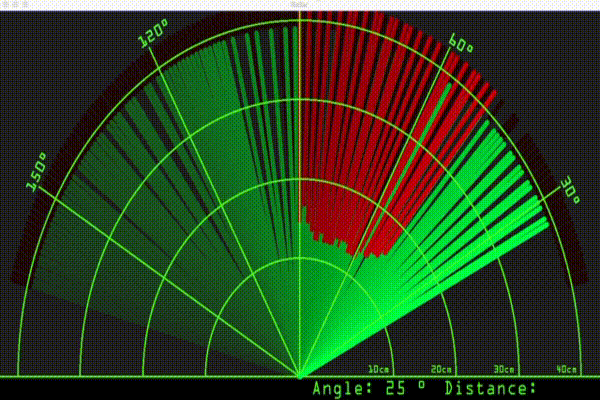

//(ref)

//Arduino Code
// Includes the Servo library
#include <Servo.h>.
// Defines Tirg and Echo pins of the Ultrasonic Sensor
const int trigPin = 10;
const int echoPin = 11;
// Variables for the duration and the distance
long duration;
int distance;
Servo myServo; // Creates a servo object for controlling the servo motor
void setup() {
pinMode(trigPin, OUTPUT); // Sets the trigPin as an Output
pinMode(echoPin, INPUT); // Sets the echoPin as an Input
Serial.begin(9600);
myServo.attach(12); // Defines on which pin is the servo motor attached
}
void loop() {
// rotates the servo motor from 15 to 165 degrees
for(int i=15;i<=165;i++){
myServo.write(i);
delay(30);
distance = calculateDistance();// Calls a function for calculating the distance measured by the Ultrasonic sensor for each degree
Serial.print(i); // Sends the current degree into the Serial Port
Serial.print(","); // Sends addition character right next to the previous value needed later in the Processing IDE for indexing
Serial.print(distance); // Sends the distance value into the Serial Port
Serial.print("."); // Sends addition character right next to the previous value needed later in the Processing IDE for indexing
}
// Repeats the previous lines from 165 to 15 degrees
for(int i=165;i>15;i--){
myServo.write(i);
delay(30);
distance = calculateDistance();
Serial.print(i);
Serial.print(",");
Serial.print(distance);
Serial.print(".");
}
}
// Function for calculating the distance measured by the Ultrasonic sensor
int calculateDistance(){
digitalWrite(trigPin, LOW);
delayMicroseconds(2);
// Sets the trigPin on HIGH state for 10 micro seconds
digitalWrite(trigPin, HIGH);
delayMicroseconds(10);
digitalWrite(trigPin, LOW);
duration = pulseIn(echoPin, HIGH); // Reads the echoPin, returns the sound wave travel time in microseconds
distance= duration*0.034/2;
return distance;
} |
//processing code 尺寸待修正
import processing.serial.*; // imports library for serial communication
import java.awt.event.KeyEvent; // imports library for reading the data from the serial port
import java.io.IOException;
Serial myPort; // defines Object Serial
// defubes variables
String angle="";
String distance="";
String data="";
String noObject;
float pixsDistance;
int iAngle, iDistance;
int index1=0;
int index2=0;
PFont orcFont;
void setup() {
size (1920, 1080);
smooth();
myPort = new Serial(this,"COM3", 9600); // starts the serial communication
myPort.bufferUntil('.');
// reads the data from the serial port up to the character '.'. So
actually it reads this: angle,distance.
orcFont = loadFont("OCRAExtended-30.vlw");
}
void draw() {
fill(98,245,31);
textFont(orcFont);
// simulating motion blur and slow fade of the moving line
noStroke();
fill(0,4);
rect(0, 0, width, 1010);
fill(98,245,31); // green color
// calls the functions for drawing the radar
drawRadar();
drawLine();
drawObject();
drawText();
}
void serialEvent (Serial myPort) { // starts reading data from the Serial Port
// reads the data from the Serial Port up to the character '.' and puts it into the String variable "data".
data = myPort.readStringUntil('.');
data = data.substring(0,data.length()-1);
index1 = data.indexOf(","); // find the character ',' and puts it into the variable "index1"
angle= data.substring(0, index1); // read the data from position "0" to
position of the variable index1 or thats the value of the angle the
Arduino Board sent into the Serial Port
distance=
data.substring(index1+1, data.length()); // read the data from position
"index1" to the end of the data pr thats the value of the distance
// converts the String variables into Integer
iAngle = int(angle);
iDistance = int(distance);
}
void drawRadar() {
pushMatrix();
translate(960,1000); // moves the starting coordinats to new location
noFill();
strokeWeight(2);
stroke(98,245,31);
// draws the arc lines
arc(0,0,1800,1800,PI,TWO_PI);
arc(0,0,1400,1400,PI,TWO_PI);
arc(0,0,1000,1000,PI,TWO_PI);
arc(0,0,600,600,PI,TWO_PI);
// draws the angle lines
line(-960,0,960,0);
line(0,0,-960*cos(radians(30)),-960*sin(radians(30)));
line(0,0,-960*cos(radians(60)),-960*sin(radians(60)));
line(0,0,-960*cos(radians(90)),-960*sin(radians(90)));
line(0,0,-960*cos(radians(120)),-960*sin(radians(120)));
line(0,0,-960*cos(radians(150)),-960*sin(radians(150)));
line(-960*cos(radians(30)),0,960,0);
popMatrix();
}
void drawObject() {
pushMatrix();
translate(960,1000); // moves the starting coordinats to new location
strokeWeight(9);
stroke(255,10,10); // red color
pixsDistance = iDistance*22.5; // covers the distance from the sensor from cm to pixels
// limiting the range to 40 cms
if(iDistance<40){
// draws the object according to the angle and the distance
line(pixsDistance*cos(radians(iAngle)),-pixsDistance*sin(radians(iAngle)),950*cos(radians(iAngle)),-950*sin(radians(iAngle)));
}
popMatrix();
}
void drawLine() {
pushMatrix();
strokeWeight(9);
stroke(30,250,60);
translate(960,1000); // moves the starting coordinats to new location
line(0,0,950*cos(radians(iAngle)),-950*sin(radians(iAngle))); // draws the line according to the angle
popMatrix();
}
void drawText() { // draws the texts on the screen
pushMatrix();
if(iDistance>40) {
noObject = "Out of Range";
}
else {
noObject = "In Range";
}
fill(0,0,0);
noStroke();
rect(0, 1010, width, 1080);
fill(98,245,31);
textSize(25);
text("10cm",1180,990);
text("20cm",1380,990);
text("30cm",1580,990);
text("40cm",1780,990);
textSize(40);
text("Object: " + noObject, 240, 1050);
text("Angle: " + iAngle +" °", 1050, 1050);
text("Distance: ", 1380, 1050);
if(iDistance<40) {
text(" " + iDistance +" cm", 1400, 1050);
}
textSize(25);
fill(98,245,60);
translate(961+960*cos(radians(30)),982-960*sin(radians(30)));
rotate(-radians(-60));
text("30°",0,0);
resetMatrix();
translate(954+960*cos(radians(60)),984-960*sin(radians(60)));
rotate(-radians(-30));
text("60°",0,0);
resetMatrix();
translate(945+960*cos(radians(90)),990-960*sin(radians(90)));
rotate(radians(0));
text("90°",0,0);
resetMatrix();
translate(935+960*cos(radians(120)),1003-960*sin(radians(120)));
rotate(radians(-30));
text("120°",0,0);
resetMatrix();
translate(940+960*cos(radians(150)),1018-960*sin(radians(150)));
rotate(radians(-60));
text("150°",0,0);
popMatrix();
}
/*
You
don't have to download any .vlw files, but will have to make them
yourself out of any font which is installed in your system.
The process is simple: In the processing IDE,
- go to Tools / Create Font
- pick a font and a size and accept.
If
you click then Sketch / Show sketch folder you'll be able to see the
font in the data folder. Now you can use it in your processing sketch
with loadFont().
*/ |
//修正中
import processing.serial.*; // imports library for serial communication
import java.awt.event.KeyEvent; // imports library for reading the data from the serial port
import java.io.IOException;
Serial myPort; // defines Object Serial
// defubes variables
String angle="";
String distance="";
String data="";
String noObject;
float pixsDistance;
int iAngle, iDistance;
int index1=0;
int index2=0;
PFont orcFont;
void setup() {
size (800, 600);
smooth();
myPort = new Serial(this,"COM3", 9600); // starts the serial communication
myPort.bufferUntil('.'); // reads the data from the serial port up to the character '.'. So actually it reads this: angle,distance.
//orcFont = loadFont("OCRAExtended-30.vlw");
}
void draw() {
fill(98,245,31);
// textFont(orcFont);
// simulating motion blur and slow fade of the moving line
noStroke();
fill(0,4);
rect(0, 0, width, height);
fill(98,245,31); // green color
// calls the functions for drawing the radar
drawRadar();
drawLine();
drawObject();
drawText();
}
void serialEvent (Serial myPort) { // starts reading data from the Serial Port
// reads the data from the Serial Port up to the character '.' and puts it into the String variable "data".
data = myPort.readStringUntil('.');
data = data.substring(0,data.length()-1);
index1 = data.indexOf(","); // find the character ',' and puts it into the variable "index1"
angle= data.substring(0, index1); // read the data from position "0" to position of the variable index1 or thats the value of the angle the Arduino Board sent into the Serial Port
distance= data.substring(index1+1, data.length()); // read the data from position "index1" to the end of the data pr thats the value of the distance
// converts the String variables into Integer
iAngle = int(angle);
iDistance = int(distance);
}
void drawRadar() {
pushMatrix();
translate(width/2,height*3/4); // moves the starting coordinats to new location
noFill();
strokeWeight(2);
stroke(98,245,31);
// draws the arc lines
arc(0,0,width,width,PI,TWO_PI);
arc(0,0,width/2,width/2,PI,TWO_PI);
arc(0,0,width/4*3,width/4*3,PI,TWO_PI);
arc(0,0,width/4,width/4,PI,TWO_PI);
// draws the angle lines
line(-width/2,0,width/2,0);
line(0,0,width/2*cos(radians(-30)),width/2*sin(radians(-30)));
line(0,0,width/2*cos(radians(-60)),width/2*sin(radians(-60)));
line(0,0,width/2*cos(radians(-90)),width/2*sin(radians(-90)));
line(0,0,width/2*cos(radians(-120)),width/2*sin(radians(-120)));
line(0,0,width/2*cos(radians(-150)),width/2*sin(radians(-150)));
line(-width/2*cos(radians(30)),0,width/2,0);
popMatrix();
}
void drawObject() {
pushMatrix();
translate(width/2,height*3/4); // moves the starting coordinats to new location
strokeWeight(9);
stroke(255,10,10); // red color
pixsDistance = iDistance*22.5; // covers the distance from the sensor from cm to pixels
// limiting the range to 40 cms
if(iDistance<40){
// draws the object according to the angle and the distance
line(pixsDistance*cos(radians(iAngle)),-pixsDistance*sin(radians(iAngle)),width*cos(radians(iAngle)),-width*sin(radians(iAngle)));
}
popMatrix();
}
void drawLine() {
pushMatrix();
strokeWeight(9);
stroke(30,250,60);
translate(width/2,height*3/4); // moves the starting coordinats to new location
line(0,0,width*cos(radians(iAngle)),-width*sin(radians(iAngle))); // draws the line according to the angle
popMatrix();
}
void drawText() { // draws the texts on the screen
pushMatrix();
if(iDistance>40) {
noObject = "Out of Range";
}
else {
noObject = "In Range";
}
fill(0,0,0);
noStroke();
rect(0, 1010, width, 1080);
fill(98,245,31);
textSize(25);
text("10cm",width*5/8,height*3/4);
text("20cm",width*6/8,height*3/4);
text("30cm",width*7/8,height*3/4);
text("40cm",1780,height*3/4);
textSize(40);
text("Object: " + noObject, 240, 1050);
text("Angle: " + iAngle +" °", 1050, 1050);
text("Distance: ", 1380, 1050);
if(iDistance<40) {
text(" " + iDistance +" cm", 1400, 1050);
}
textSize(25);
fill(98,245,60);
translate(width/2+width/2*cos(radians(30)),3*height/4-width/2*sin(radians(30)));
rotate(radians(-30));
text("30°",0,0);
resetMatrix();
translate(width/2+width/2*cos(radians(60)),3*height/4-width/2*sin(radians(60)));
rotate(radians(-60));
text("60°",0,0);
resetMatrix();
translate(width/2+width/2*cos(radians(90)),3*height/4-width/2*sin(radians(90)));
rotate(radians(0));
text("90°",0,0);
resetMatrix();
translate(width/2+width/2*cos(radians(120)),3*height/4-width/2*sin(radians(120)));
rotate(radians(-120));
text("120°",0,0);
resetMatrix();
translate(width/2+width/2*cos(radians(150)),3*height/4-width/2*sin(radians(150)));
rotate(radians(-150));
text("150°",0,0);
popMatrix();
} |
|